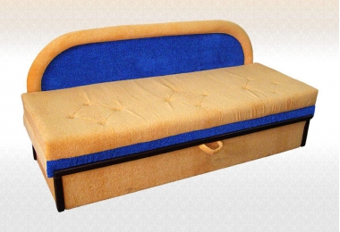

Инка
- 
-
Характеристики
- Ширина 190 см
- Высота 85 см
- Глубина 78 см
- Фабрика: Стиль-М
Описание:
Диван Инка - это отличный пример надежной и удобной мягкой мебели. Диван имеет выкатной механизм трансформации. Эта модель легко раскладывается и подходит для ежедневного использования в качестве спального места. Декором дивана являются необычная дугообразная спинка и съемные подлокотники, а три мягкие подушки не только украшают данную модель, но и делают Ваш отдых комфортнее. Также иметься ящик для хранении постельных принадлежностей. Основа дивана- пенополиуретан. Каркас изготовлен из бруса хвойных пород дерева, ДСП и ДВП.
3300грн